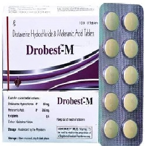

Drotaverine

အစာအိမ္ႏွင့္ ႏွလံုးတြင္းရိွ ႂကြက္သားမ်ား (Smooth muscles) တဆတ္ဆတ္ လႈပ္ရွားျခင္း၊ တင္းမာျခင္း တို႔ကို ေျပေလ်ာ့ေစပါသည္။
ဘယ္မွာသံုးလဲ
- Irritable Bowel Syndrome (ဗိုက္ရစ္နာျခင္း)
- ေခါင္းကိုက္ျခင္း
- အမ်ိဳးသမီးမ်ား ရာသီလာစဥ္ နာက်င္ျခင္း
- ကေလးေမြးဖြားခါနိီးသား အိမ္ေခါင္းႂကြက္သားမ်ား လႈပ္ရွားမႈေၾကာင့္ နာက်င္ျခင္း
ဘယ္လိုသံုးရမလဲ
- ဆရာဝန္ညႊန္ၾကားသည့္အတိုင္းတိတိက်က်အသံုးျပဳပါ။
- အစာႏွင့္ ေသာ္လည္းေကာင္း၊ အစာႏွင့္ျခားၿပီး ေသာ္လည္းေကာင္းသံုးႏိုင္ပါသည္။
- ေဘးထြက္ဆိုးက်ိဳးဘာေတြရွိလဲ
- ပ်ဳိ႕အန္ျခင္း
- ေသြးခုန္ႏႈန္းေျပာင္းလဲျခင္း
- ေခါင္းကိုက္ျခင္း
- ေဆးႏွင့္ဓာတ္မတည့္ေသာလကၡဏာမ်ား (ေရာင္ရမ္းယားယံျခင္း၊ အသက္ရႈရခက္ျခင္း)
- ေသြးေပါင္က်ျခင္း
- အာေခါင္ေျခာက္ျခင္း
- မူးေဝျခင္း
- အသက္ရႈၾကပ္ျခင္းမ်ား ခံစားရနိုင္ပါတယ္။
ဘာေတြ သတိထားရမလဲ
- အသည္းေရာဂါ၊ ေက်ာက္ကပ္ေရာဂါ၊ ေသြးေပါင္က်ျခင္းတို႔တြင္ သတိျပဳ သံုးစဲြသင့္ပါသည္။
- ေဆးေသာက္ေနစဥ္ အရက္ေသာက္သံုးမႈ ေရွာင္ရွားသင့္သည္။
- ကိုယ္ဝန္ေဆာင္မ်ားတြင္ ေဆးအသံုးျပဳရန္ အေၾကာင္းရင္း ခိုင္လံုမွသာ ဆရာဝန္ညႊန္ၾကားခ်က္အတိုင္း အသံုးျပဳသင့္ပါသည္။
- ေဆးတစ္ခုခုႏွင့္ ဓာတ္မတည့္ဖူးသူမ်ား ဆရာဝန္ႏွင့္ ေသခ်ာစြာတိုင္ပင္ၿပီးမွ ေသာက္သံုးပါ။
ေဆး အာနိသင္ ဘယ္လိုရွိလဲ
- Atropine
- Diclofenac sodium
- Levodopa
- Diazepam စေသာ ေဆးမ်ားႏွင့္ အျပန္အလွန္ သက္ေရာက္မႈ ရိွႏိုင္ပါသည္။ ထိုေဆးအခ်ဳိ႕ႏွင့္ တဲြဖက္သံုးစဲြလ်င္ ေဆးအာနိသင္အေပၚ သက္ေရာက္မႈ ရိွႏိုင္ပါသည္။
ေဆးေသာက္လြန္ရင္ဘာေတြျဖစ္မလဲ
- ဗိုက္ေအာင့္ျခင္း
- မူးေဝပ်ိဳ႕အန္ျခင္း
- ေသြးခုန္ႏႈန္းျမန္ျခင္း
- ေသြးေပါင္က်ျခင္းမ်ား ျဖစ္ႏိုင္ပါသည္။ ေဆးရံုေဆးခန္းသို႔အျမန္သြားေရာက္ပါ။
- ေဆးေတြကို ဘယ္ေဆးမဆို ဆရာ၀န္ ဒါမွမဟုတ္ တတ္ကၽြမ္းနားလည္တဲ့ က်န္းမာေရး၀န္ထမ္းေတြရဲ႕ ညႊန္ၾကားခ်က္အတိုင္း တိတိက်က် ေသာက္သင့္ပါတယ္။
- မိမိသေဘာနဲ႔ေဆးရပ္လိုက္တာမ်ဳိး မလုပ္သင့္ပါဘူး။
- ေဘးထြက္ဆိုးက်ဳိး ျပင္းျပင္းထန္ထန္ ခံစားရရင္ေတာ့ ဆရာ၀န္နဲ႔တိုင္ပင္ဖို႔ လိုအပ္ပါတယ္။
Source– ေဒါက္တာခ်စ္စႏီၵေက်ာ္